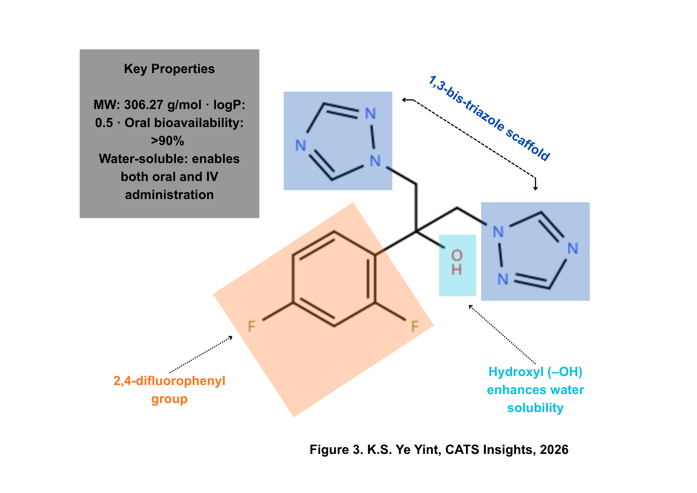
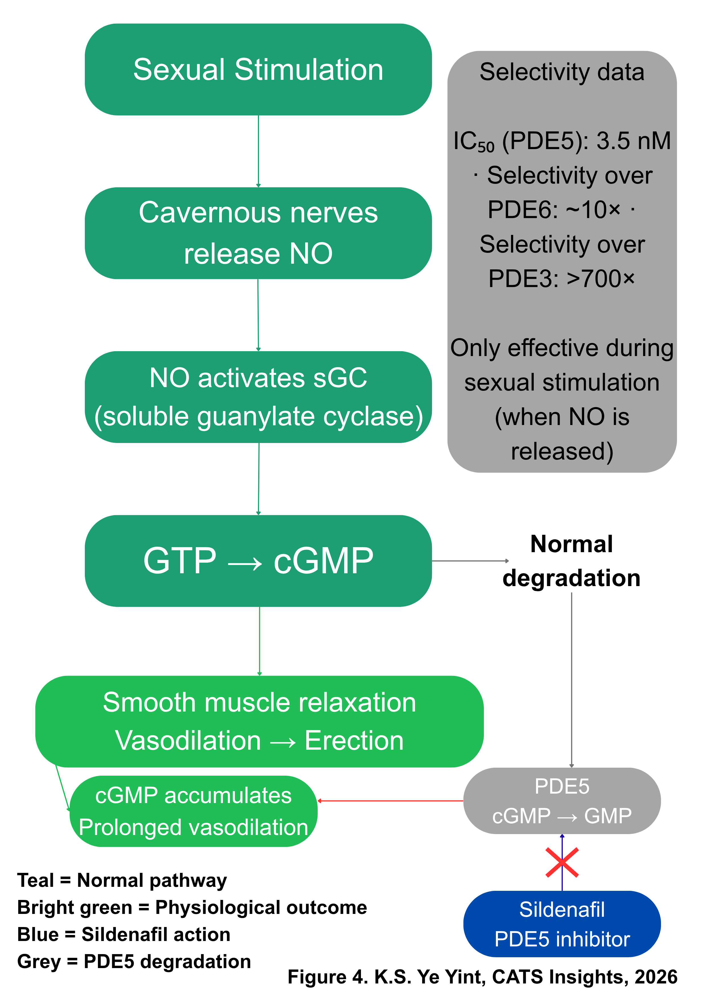
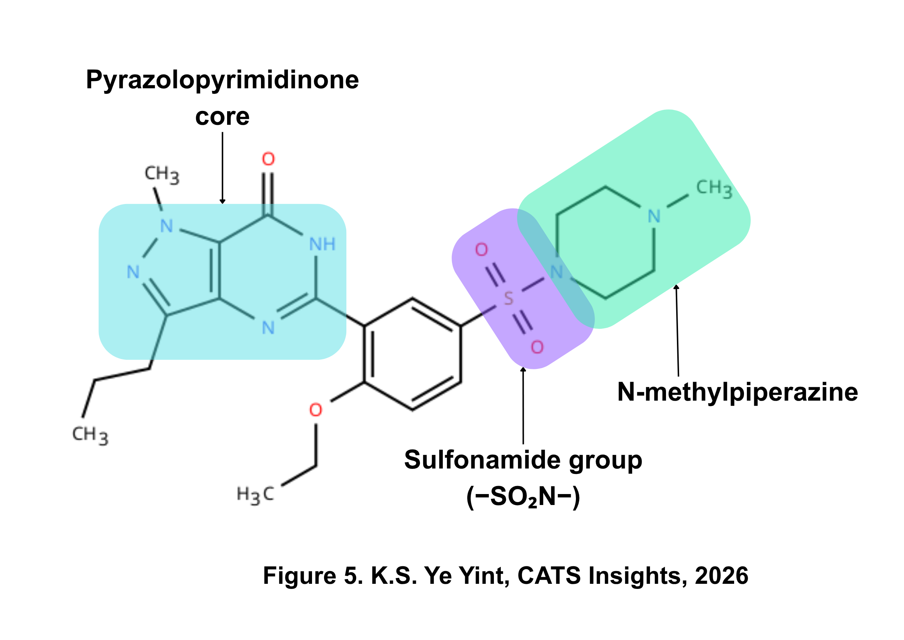

{kind=link}
1. Introduction: A Quiet Town, a Global Laboratory

{kind=link}
Sandwich is a mediaeval town in the Dover District of East Kent, better known for its Cinque Ports heritage than for pharmaceutical innovation. Yet for over five decades, a research campus on its outskirts served as the European headquarters of Pfizer, one of the world's largest pharmaceutical companies. The medicines discovered there, spanning antifungals, antihypertensives, and antiretrovirals, have been prescribed to hundreds of millions of patients worldwide.
The story of Pfizer Sandwich is, at its core, a story about what happens when sustained institutional investment meets scientific curiosity. It is also, inescapably, a story about Kent: about the infrastructure, talent, and geography that made a small English town the unlikely birthplace of blockbuster medicines. For students of chemistry, the site offers something rarer still, a case study in how fundamental concepts from the textbook, enzyme inhibition, structure activity relationships, and pharmacokinetics become medicines in the clinic.
2. Origins: From Folkestone to Sandwich (1952–1971)
Pfizer's presence in Kent began in 1952, when the company established a compounding operation in Folkestone to convert base compounds into medicines suitable for the British market.1 Two years later, Pfizer acquired an 80-acre site on the outskirts of Sandwich to expand its Kent-based activities.1 The campus would eventually grow to encompass over 390 acres.2 An animal-feed plant was established in 1955, followed by an Agricultural Division in 1957, the same year that research activities commenced at the site with a team of just six scientists.2
The scale of ambition grew rapidly. In 1964, Pfizer acquired adjacent land known as the 'West Site', and by 1971, Pfizer Central Research had been formally established at Sandwich with a mandate to discover new pharmaceutical, chemical, and agricultural products for Pfizer's worldwide operations.1 The site would eventually expand to employ over 3,500 people across 2.2 million square feet of research and development space, making it one of the largest pharmaceutical R&D campuses in Europe.2
3. Fluconazole: Redesigning the Antifungal Arsenal
3.1 The Clinical Need
In the late 1970s, the treatment of serious fungal infections was severely limited. The two principal agents available, amphotericin B and flucytosine, each carried significant drawbacks. Amphotericin B, while effective, required intravenous administration and was associated with severe nephrotoxicity. Flucytosine was orally active but possessed a narrow spectrum and was susceptible to resistance.3 For immunocompromised patients, particularly those with HIV/AIDS, a population that would expand dramatically through the 1980s, the need for a safe, broad-spectrum, orally bioavailable antifungal was acute.
3.2 The Chemistry of Discovery
In 1978, a research programme was initiated at Pfizer's Sandwich laboratories, led by Dr Ken Richardson, with the objective of developing a new antifungal agent suitable for both oral and intravenous use. The team selected azole derivatives as their starting point, owing to their established tolerability and selective mechanism of action: inhibition of fungal sterol C-14 demethylation.4,3
The target enzyme, lanosterol 14α-demethylase, is a cytochrome P450 enzyme (CYP51) that catalyses an essential step in the biosynthesis of ergosterol, the principal sterol in fungal cell membranes, functionally analogous to cholesterol in mammalian cells. By inhibiting this enzyme, azole antifungals disrupt ergosterol production, compromising membrane integrity and ultimately causing fungal cell death.
Initial investigations focused on imidazole derivatives, but the team soon redirected their attention to triazole analogues. The rationale was pharmacokinetic: triazoles demonstrated reduced susceptibility to metabolic breakdown compared to imidazoles, potentially enabling better oral bioavailability and a longer half-life.4 The researchers further emphasised polar derivatives, hypothesising that increased polarity would facilitate higher blood levels and further reduce metabolic degradation.

This strategy yielded a series of novel 1,3-bis-triazole-2-arylpropan-2-ol derivatives with promising activity across multiple models of fungal infection. Among these, the 2,4-difluorophenyl analogue stood out: it was the only derivative that was water-soluble, enabling formulation for both oral and intravenous administration, a critical advantage that none of the competing analogues offered. This compound was designated fluconazole and selected for clinical development on the basis of its optimal combination of antifungal efficacy, pharmacokinetic profile, aqueous solubility, and safety.3
3.3 Clinical Impact
Fluconazole was launched commercially as Diflucan® in 1988. In the United States, the FDA granted it fast-track treatment, approving it for use in just nine months, a reflection of the urgency created by the HIV/AIDS epidemic.5 The drug proved effective against a wide range of fungal infections in immunocompromised patients, including transplant recipients, burn survivors, and individuals undergoing chemotherapy. Pfizer UK received the Queen's Award for Technological Achievement in 1991 in recognition of the discovery.1 Dr Richardson himself was appointed an Officer of the Order of the British Empire (OBE) in 1997 and was inducted into the United States National Inventors Hall of Fame in 2008, one of only two Pfizer scientists to receive this honour.5
Richardson's personal story carries its own significance. He left school at sixteen to work as a laboratory assistant, earning his chemistry degree through evening classes at Trent Polytechnic before completing a doctorate at the University of Nottingham.5 His trajectory from evening-class student to National Inventors Hall of Fame inductee illustrates a principle worth noting: access to scientific careers need not depend on conventional academic pathways nor any other limitations.
4. Sildenafil: Serendipity and the Art of Repositioning
4.1 The Cardiovascular Hypothesis
By the mid-1980s, the cardiovascular research programme at Sandwich was generating significant results. The site had already contributed to the development of doxazosin (Cardura®) and amlodipine (Norvasc®/Istin®), antihypertensive agents that would become widely prescribed. Researchers began exploring the therapeutic potential of modulating intracellular levels of cyclic guanosine monophosphate (cGMP), building on the established clinical use of nitrates for angina pectoris.6

The scientific rationale was grounded in the nitric oxide (NO)/cGMP signalling pathway. Nitric oxide, released by endothelial cells, activates soluble guanylate cyclase (sGC), which converts guanosine triphosphate (GTP) to cGMP.7 Elevated cGMP induces smooth muscle relaxation and vasodilation. The duration of this vasodilatory signal is regulated by phosphodiesterase type 5 (PDE5), the enzyme responsible for hydrolysing cGMP back to its inactive form, GMP.7 The Pfizer team hypothesised that selective inhibition of PDE5 would prolong the vasodilatory effect of endogenous NO, offering a potential treatment for angina.
It is worth placing this work in a broader scientific context. The discovery of nitric oxide as a signalling molecule in the cardiovascular system was recognised with the 1998 Nobel Prize in Physiology or Medicine, awarded to Robert Furchgott, Louis Ignarro, and Ferid Murad.8 Sildenafil's mechanism of action is directly built upon their foundational research.
4.2 Synthesis and Preclinical Profile

In 1989, a team of medicinal chemists working within a programme led by Simon Campbell synthesised a novel pyrazolopyrimidinone compound designated UK-92,480.6 The discovery team included Nicholas Terrett, Andrew Bell, David Brown, and Peter Ellis, whose foundational work was published in 1996.9 Peter Dunn and Albert Wood subsequently developed the scaleable manufacturing process that enabled commercial production of the compound.10 UK-92,480 demonstrated potent and selective inhibition of PDE5, with a half-maximal inhibitory concentration (IC50) of 3.5 nM against PDE5 derived from human corpus cavernosum, approximately tenfold more selective than its inhibition of PDE6 and over 700-fold more selective than for PDE3.9 Preclinical studies confirmed vasodilatory effects and inhibition of platelet aggregation, and UK-92,480 was selected for clinical development.
4.3 The Clinical Pivot
Phase I clinical trials, conducted at Morriston Hospital in Swansea under the direction of Dr Ian Osterloh, produced results that were, from a cardiovascular perspective, disappointing. Sildenafil showed limited efficacy against angina. However, trial participants reported a consistent and unexpected side effect: marked penile erections.6
This observation coincided with emerging research demonstrating that nitric oxide is the principal neurotransmitter released from cavernous nerves during sexual stimulation and that the corpus cavernosum is particularly enriched with PDE5.7 The Pfizer team recognised that a selective PDE5 inhibitor could enhance the natural erectile response by prolonging cGMP-mediated smooth muscle relaxation in penile tissue but only during sexual stimulation, when NO release is elevated. This mechanism offered a physiologically targeted approach to treating erectile dysfunction, unlike the existing invasive therapies: injectable prostaglandins, vacuum devices, and surgical implants.
Pfizer repositioned the compound, now named sildenafil. Clinical trials for erectile dysfunction commenced in 1993.11 The drug was patented in 1996, and on 27 March 1998, the United States Food and Drug Administration approved sildenafil (Viagra®) as the first oral treatment for erectile dysfunction.11 In the first two weeks on the American market, an estimated 150,000 prescriptions were written; within a year, annual sales surpassed one billion dollars.12 The story did not end there. Sildenafil was subsequently approved for the treatment of pulmonary arterial hypertension (marketed as Revatio®), exploiting the same PDE5 inhibitory mechanism to reduce pulmonary vascular resistance.7 The drug's journey from angina candidate to erectile dysfunction treatment to pulmonary hypertension therapy represents a textbook example of drug repositioning, the process by which a compound developed for one indication is redirected to another based on observed pharmacological effects.
5. The Broader Sandwich Portfolio
Fluconazole and sildenafil are the most widely known products of the Sandwich site, but they represent only part of a broader portfolio. Other medicines discovered or significantly developed at the facility include amlodipine (Istin®/Norvasc®), a calcium channel blocker for hypertension; doxazosin (Cardura®), an alpha-adrenergic blocker; voriconazole (Vfend®), a second-generation triazole antifungal building on the fluconazole platform; and maraviroc (Celsentri®), the first orally administered CCR5 antagonist for the treatment of HIV, representing yet another 'first' from the Sandwich laboratories.2
The site received six Queen's Awards across its operational history: for Technological Achievement in 1979 (for oxamniquine) and 1991 (for fluconazole), Export Achievement in 1993, International Trade in 1997 and 2000, and Enterprise in 2001 (for the discovery and development of Viagra).1 At its peak, the Sandwich facility employed over 3,500 people and constituted one of the largest pharmaceutical research operations of any American company outside the United States.2
6. Discovery Park: Continuity and Reinvention
{kind=link}
On 1 February 2011, Pfizer announced the closure of the Sandwich R&D facility as part of a global restructuring programme, placing approximately 2,400 jobs at risk.2 The announcement represented a significant economic shock to East Kent.
However, the site's story did not end with Pfizer's withdrawal. The campus was acquired and redeveloped as Discovery Park, which has since grown into one of the United Kingdom's leading science and innovation hubs. As of 2026, the site hosts over 180 companies and more than 3,000 people, working across life sciences, biotechnology, and technology.13 Pfizer itself maintains a significant presence at the site, focused on mid- to late-stage pharmaceutical development.13 Other tenants include Asymchem (a Chinese CDMO that inaugurated its first European facility at the site in 2024), Viatris, Concept Life Sciences, and Canterbury Christ Church University, which operates laboratory facilities on the campus.13
Discovery Park holds Enterprise Zone status and is one of only seven Life Science Opportunity Zones in the United Kingdom.13 Perhaps most relevant to the readership of this publication, a new science specialist sixth form, Carbon 6 Academy of Science, is due to open at the site in September 2026, designed for students aged 16–18 with a focus on science and mathematics.13 The physical infrastructure that produced fluconazole and sildenafil is, in a meaningful sense, being repurposed to train the next generation of scientists.
7. Conclusion: What Sandwich Teaches Us
The Pfizer Sandwich story offers several insights that extend beyond its specific institutional history. First, it demonstrates the relationship between sustained research investment and transformative outcomes: the fluconazole programme ran for over a decade from inception to clinical launch, and the sildenafil journey from cardiovascular hypothesis to erectile dysfunction approval spanned nearly as long. Breakthrough medicines are not produced quickly.
Second, the sildenafil case illustrates the importance of serendipity and scientific alertness. The compound's unexpected side effect in clinical trials could have been dismissed as a curiosity. Instead, the research team recognised its therapeutic potential, connected it to emerging basic science, and executed a successful repositioning. This required both the intellectual flexibility to abandon the original indication and the institutional willingness to invest in an entirely new clinical programme.
Third, the Discovery Park transformation suggests that scientific infrastructure, once established, can outlast the institutions that built it. The laboratories, the talent pipeline, and the geographical advantages that attracted Pfizer to Sandwich in 1954 continue to attract innovators today.
For students in Kent studying chemistry, the legacy is not abstract. It is twenty minutes down the road.
Bibliography
1. Pfizer UK, 'Our History and Achievements in the UK', https://www.pfizer.co.uk/science/pfizer-in-the-uk/our-history
2. Pharmaceutical Technology, 'Pfizer European R&D Headquarters, Sandwich, Kent', 2010. https://www.pharmaceutical-technology.com/projects/pfizersandwichsite/
3. Richardson, K., Brammer, K.W., Marriott, M.S. and Troke, P.F., 'Discovery of fluconazole, a novel antifungal agent', Reviews of Infectious Diseases, vol. 12, Supplement 3, 1990, pp. S267–S271. doi: 10.1093/clinids/12.supplement_3.s267.
4. Richardson, K., 'The discovery and profile of fluconazole', Journal of Chemotherapy, vol. 2, no. 1, 1990, pp. 51–54. doi: 10.1080/1120009X.1990.11738981.
5. National Inventors Hall of Fame, 'Ken Richardson: Fluconazole', 2008. https://www.invent.org/inductees/ken-richardson
6. Osterloh, I.H., 'The discovery and development of Viagra® (sildenafil citrate)', in U. Dunzendorfer (ed.), Sildenafil. Milestones in Drug Therapy, Basel, Birkhäuser, 2004. doi: 10.1007/978-3-0348-7945-3_1.
7. Andersson, K.-E., 'PDE5 inhibitors – pharmacology and clinical applications 20 years after sildenafil discovery', British Journal of Pharmacology, vol. 175, no. 13, 2018, pp. 2554–2565. doi: 10.1111/bph.14205.
8. The Nobel Prize, 'The Nobel Prize in Physiology or Medicine 1998'. https://www.nobelprize.org/prizes/medicine/1998/summary/
9. Terrett, N.K., Bell, A.S., Brown, D. and Ellis, P., 'Sildenafil (Viagra™), a potent and selective inhibitor of type 5 cGMP phosphodiesterase with utility for the treatment of male erectile dysfunction', Bioorganic & Medicinal Chemistry Letters, vol. 6, no. 15, 1996, pp. 1819–1824. doi: 10.1016/0960-894X(96)00323-X.
10. Dunn, P.J., Dale, D.J., Golightly, C., Hughes, M.L., Levett, P.C., Pearce, A.K., Searle, P.M., Ward, G. and Wood, A.S., 'The chemical development of the commercial route to sildenafil: a case history', Organic Process Research & Development, vol. 4, no. 1, 2000, pp. 17–22. doi: 10.1021/op9900683.
11. Goldstein, I., Lue, T.F., Padma-Nathan, H., Rosen, R.C., Steers, W.D. and Wicker, P.A., 'Oral sildenafil in the treatment of erectile dysfunction', New England Journal of Medicine, vol. 338, no. 20, 1998, pp. 1397–1404. doi: 10.1056/NEJM199805143382001.
12. Agence France-Presse, 'Viagra turns 20: chronicle of a global success', 27 March 2018. https://www.rappler.com/science/199020-viagra-chronicle-global-success/
13. Discovery Park, 'About Discovery Park'. https://discovery-park.co.uk/
14. Smith, N., View of the Pfizer pharmaceutical site on the banks of the Stour [photograph], 2010, Geograph / Wikimedia Commons. CC BY-SA 2.0.
15. Nilfanion, Barbican, Sandwich, Kent [photograph], Wikimedia Commons. CC BY-SA 3.0.
16. Anstiss, D., Buildings on the Pfizer west site [photograph], 2011, Geograph / Wikimedia Commons. CC BY-SA 2.0.
Kyal Sin (Jason) Ye Yint
CATS Insights, The Worthgate School
Published in CATS Insights | The Worthgate School, Canterbury, Kent Chemistry
Want to read this article offline or see the original formatting?
Download Original Article (PDF)